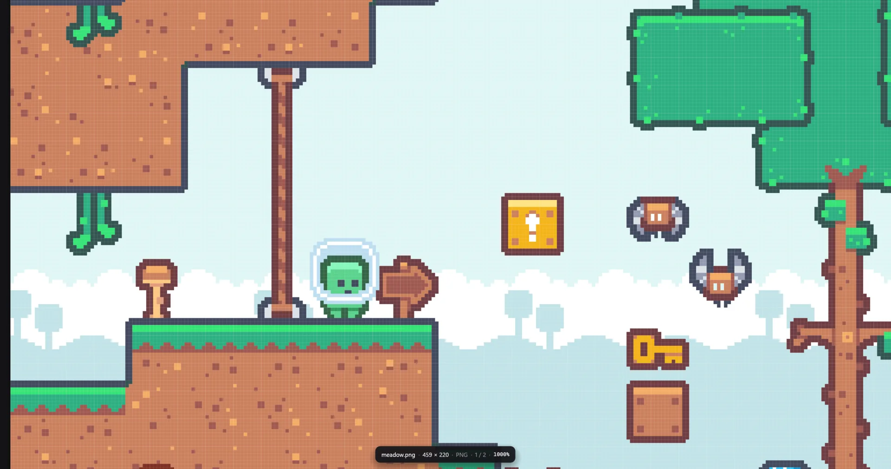
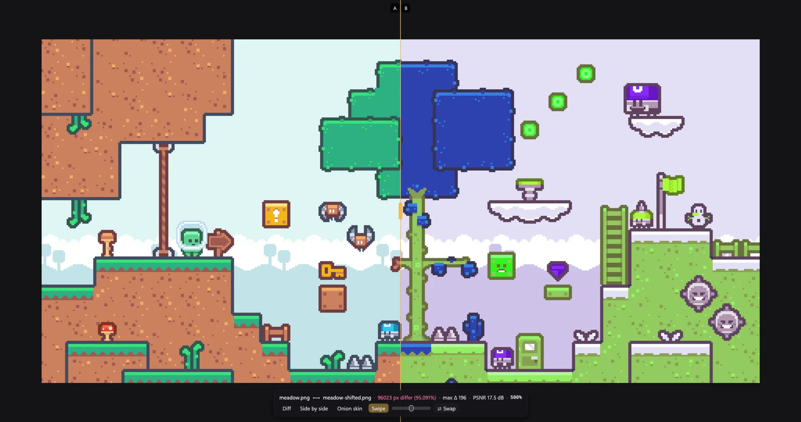
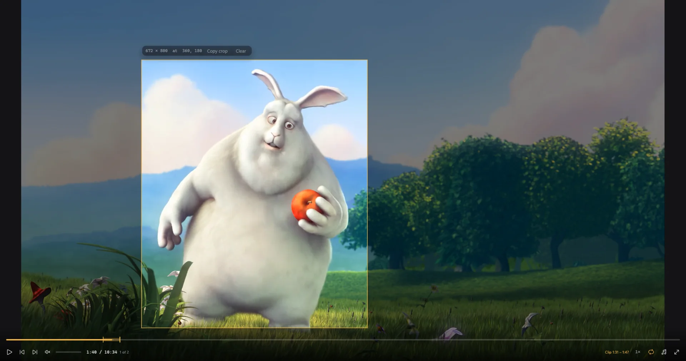
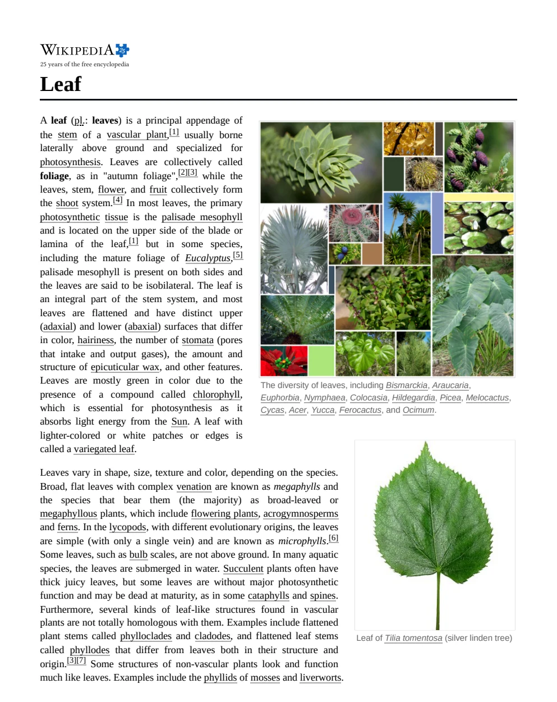
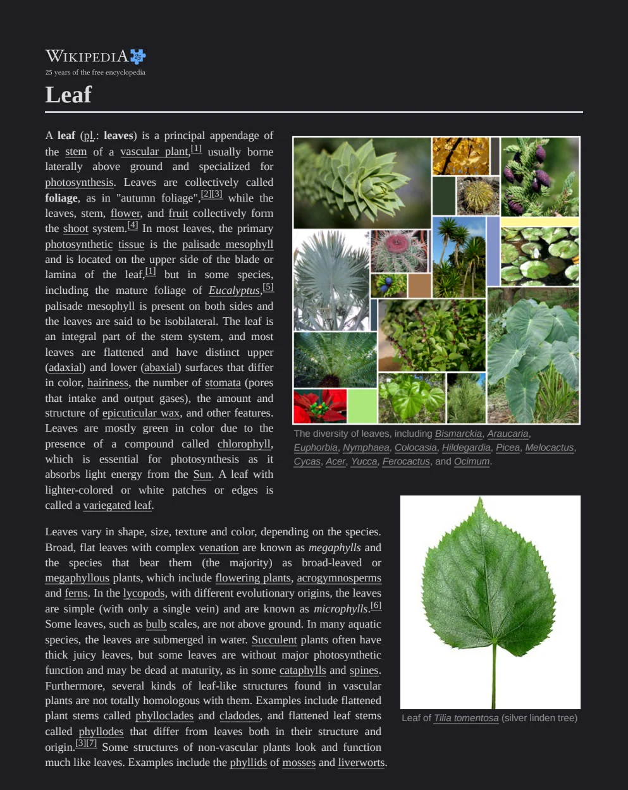

Free and open source for Windows 10 and 11
The apps your files should open with.
Glint opens images, Flick plays video, and Leaf reads PDF and Word documents. Each one opens the moment you double-click a file, keeps its interface out of your way, and can be controlled from the command line. That last part makes them a natural fit next to Claude Code.
- Written in Rust
- MIT licensed
- No account, no telemetry
- Version 0.1.0
snap command.Glint · images
See every pixel exactly as it is.
Glint is an image viewer made for game sprites and screenshots. It measures zoom in real screen pixels and snaps to whole steps such as 200%, 300% and 400%, so pixel art never turns blurry. When you need to check a change, it compares two images and tells you precisely how different they are.
Try it: scroll over the image to zoom, drag to move around, and point at any pixel to read its colour. Switch to Diff or Swipe to compare the scene with a palette-swapped copy. G grid 0 fit 1–9 zoom M next mode
Pixel art stays crisp.
Small sprites open at the largest whole-number scale that fits the window, and a pixel grid fades in from 600%. Smooth scaling is one key away when you want it.
It opens almost anything.
PNG, JPEG, GIF, WebP, Aseprite, DDS, EXR and a dozen more formats are built in, and AVIF, HEIC, PSD and camera RAW go through ImageMagick. Glint recognises files by their contents, so a JPEG named .png still opens.
It understands sprite sheets.
The sprite-sheet panel slices any grid, can detect the grid from the gaps between sprites, numbers every cell and previews the cells as an animation. Aseprite files play with their tags.
Comparisons come with numbers.
Diff, side-by-side, onion-skin and swipe modes show what changed, and Glint reports the count of differing pixels, the largest channel change, RMSE and PSNR. In Explorer you can select two images and choose “Compare with Glint”.


Flick · video
Play anything, then cut exactly the part you want.
Flick is a video player built on libmpv, so it plays every format that mpv and FFmpeg understand, with hardware decoding.
Its controls fade away while a video plays. When you mark a clip or draw a crop, Flick reports both as exact
ffmpeg arguments that you or an agent can run straight away.
Try it: press play, then press [ and ] to mark a clip. The clip loops so you can check it. Press C and drag over the video to draw a crop. The state and the ffmpeg command update as you go. Space play , . step a frame ← → 1 second L loop
The interface stays calm.
A slim control bar fades out while a video plays and returns when you move the mouse. Flick remembers where you stopped in every file and keeps the display awake while you watch.
It is built for cutting.
You can step frame by frame, loop a marked clip while you check it, and draw crop regions measured in real video pixels. flick state reports all of it as JSON.
Links and subtitles just work.
Paste a link with CtrlV and Flick plays it. Subtitles next to the video load automatically, and you can drop an .srt file onto the window to add one.
Edits show up on their own.
When a file changes on disk, Flick reloads it at the same position, so a re-encode appears without you lifting a finger. flick contact tiles a whole video into one image.

crop=672:800:360:180.Leaf · PDF and Word
Read documents comfortably, by day or by night.
Leaf renders PDFs with pdfium, the engine inside Chrome, and opens Word documents as a single clean column that wraps to the window. Its search finds words even when they are hyphenated across a line break, and the text you copy comes out as proper paragraphs.
Try it: the search already found “photosynthesis” four times, including once where the word is split across two lines. Type another word, press Enter to step through the matches, select a few lines and copy them, or press D for night mode. CtrlF find Enter next match D night mode
Search finds what you meant.
Every match is highlighted and listed with its surrounding text, and ticks on the scrollbar show where the matches are. A word broken as “exam-” and “ple” still matches “example”.
Copied text is clean.
Leaf joins line breaks back into paragraphs and rejoins hyphenated words, so a quote pasted into an email or a prompt reads like the original sentence.
Night mode keeps photos real.
Pressing D turns pages dark for reading at night, while photos and figures keep their true colours instead of being inverted.
It reloads while you write.
When a LaTeX or Typst build, a script or Claude rewrites the file, Leaf reloads it in place. It also remembers your page and zoom for every document.


leaf render and the right side from
leaf render --dark. Drag the handle and notice that the text and background change while the photographs stay exactly as they were.
Always ready
Double-click a file, and it's already open.
When you close the window, the app keeps running quietly in the system tray, and it starts with Windows. The next file you double-click opens straight away, with no splash screen and no waiting. Glint opens an image in under 100 milliseconds.
Double-click a file to open it.
Choose a file on the left.
Built for working with agents
You point at it. Claude does the rest.
Every app can describe what is on screen as JSON, including your selection, marks, page and zoom, and every app can be controlled from a script. You mark something in the viewer, an agent like Claude Code reads it and does the work, and the viewer reloads to show you the result.
> trim the part I marked in flick and crop it to the box
● Bash(flick state)
⎿ clip -ss 00:01:31.500 -to 00:01:47.200 · region crop=672:800:360:180
● Bash(ffmpeg -ss 00:01:31.500 -to 00:01:47.200 -i bunny.mp4 -vf crop=672:800:360:180 apple.mp4)
⎿ apple.mp4 · 15.7 s · 672×800
● Bash(flick open apple.mp4)
● Done. The new clip is 15.7 seconds long, cropped to the bunny, and it's playing in Flick now.
glint
- state
- Reports the file, zoom, visible area and the pixel under the cursor.
- snap
- Saves exactly what the viewer shows as a PNG.
- compare
- Prints AE, RMSE and PSNR, then opens compare mode.
- edit
- Crops, trims, scales or converts an image, with undo.
flick
- state
- Reports the position, clip marks, crop region and tracks.
- ctl
- Seeks, pauses or loops the running player.
- frame
- Saves any single frame without opening the player.
- contact
- Tiles frames from a whole video into one image.
leaf
- state
- Reports the page, zoom, selection and search.
- text
- Prints PDF text page by page, or a Word file as Markdown.
- find
- Lists every match with its page and context.
- render
- Renders a page or a region of it as a PNG.
One family
Three apps that feel like one.
- They share one look.All three use the same dark canvas, the same amber accent and the same command palette on CtrlP.
- They live in the tray.Closing a window hides it instead of quitting, so the next file opens instantly. Flick stops playback when you close it.
- They remember your place.Your position in a video and your page and zoom in a document are restored when you open the file again.
- They reload on their own.When a file changes on disk, the app reloads it and keeps you looking at the same spot.
- They respect each other.Each app makes itself the default only for its own file types and keeps the other apps' defaults in place.
- Help is one key away.Press F1 in any of them to see every keyboard shortcut. This page works the same way.
Download
Make them your defaults.
All three apps are free and open source. They run on Windows 10 and 11 (64-bit), and each one installs on its own in a few seconds.
- Unzip the download. You can unzip it anywhere, for example in your Downloads folder.
- Double-click
Install.cmd. The app installs for your user account only, adds its command to your PATH and starts in the tray. - Approve the one prompt if you like. Windows asks once whether the app may become your default. If you agree, it takes over its file types the next time you sign in.
The apps are not code-signed yet, so Windows SmartScreen may say that it “protected your PC”. Click More info and then
Run anyway. Every line of code is public on GitHub, and you can remove an app at any time with Uninstall.cmd.
Build from source instead
git clone https://github.com/ethanma03/glint cd glint pwsh scripts\install.ps1 # builds, installs and registers file types pwsh scripts\update.ps1 # later: pulls, rebuilds and reinstalls
You need Rust and the GitHub CLI. Flick and Leaf download libmpv and pdfium during their first build. The same steps work for flick and leaf.